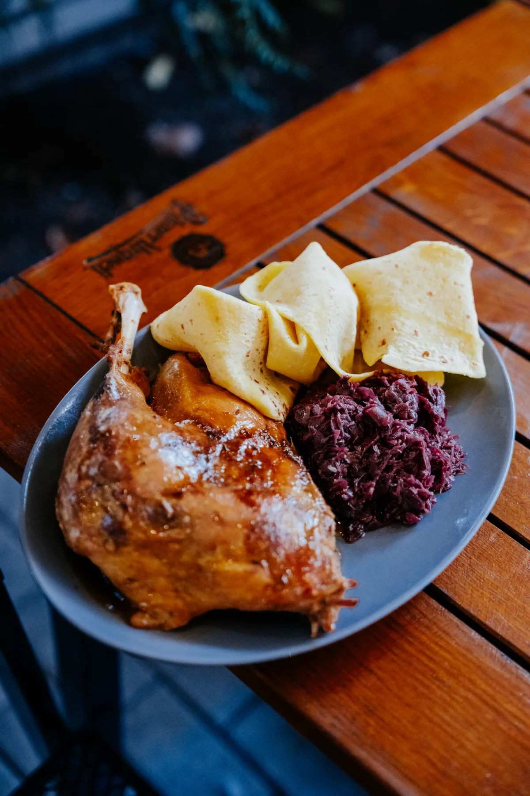
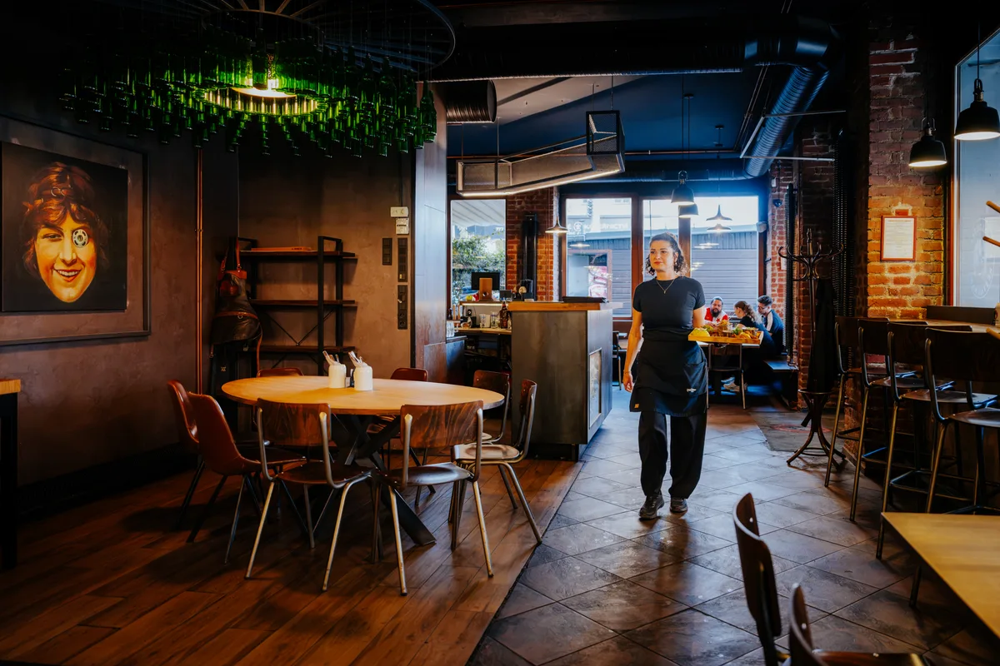
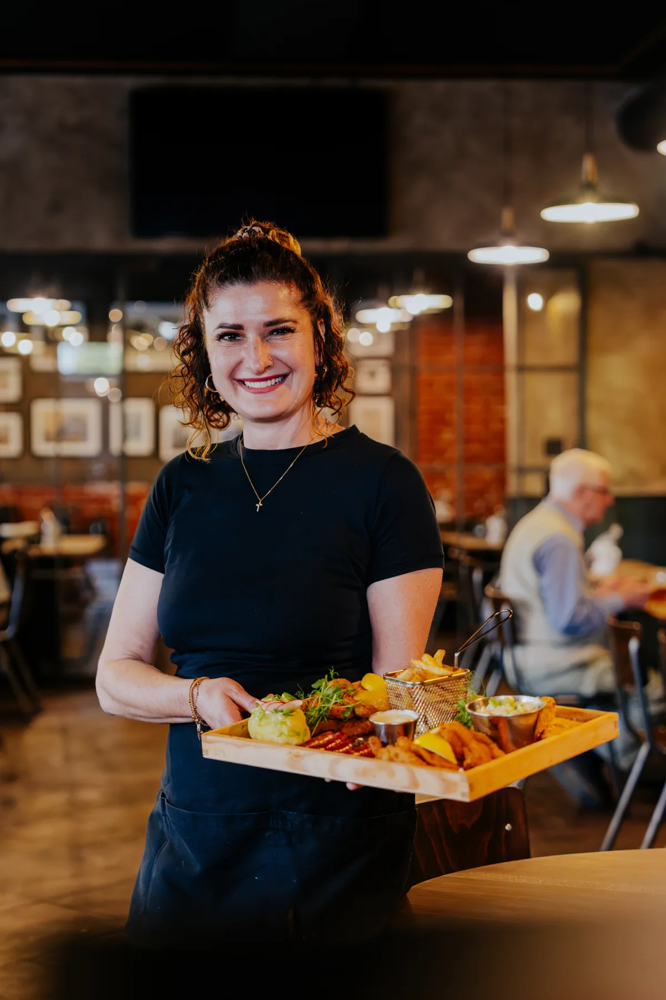
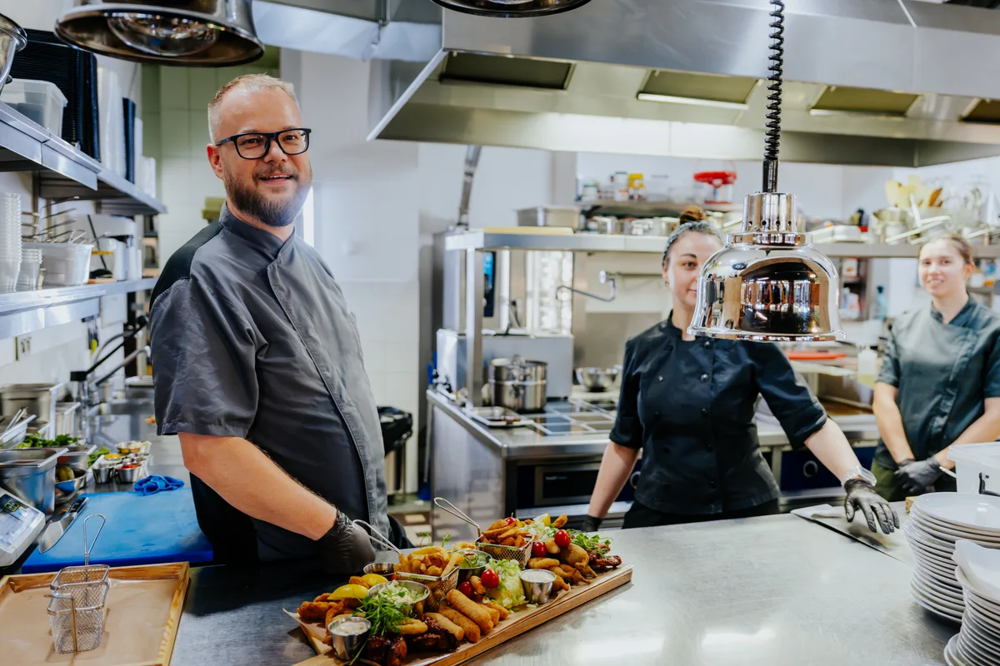
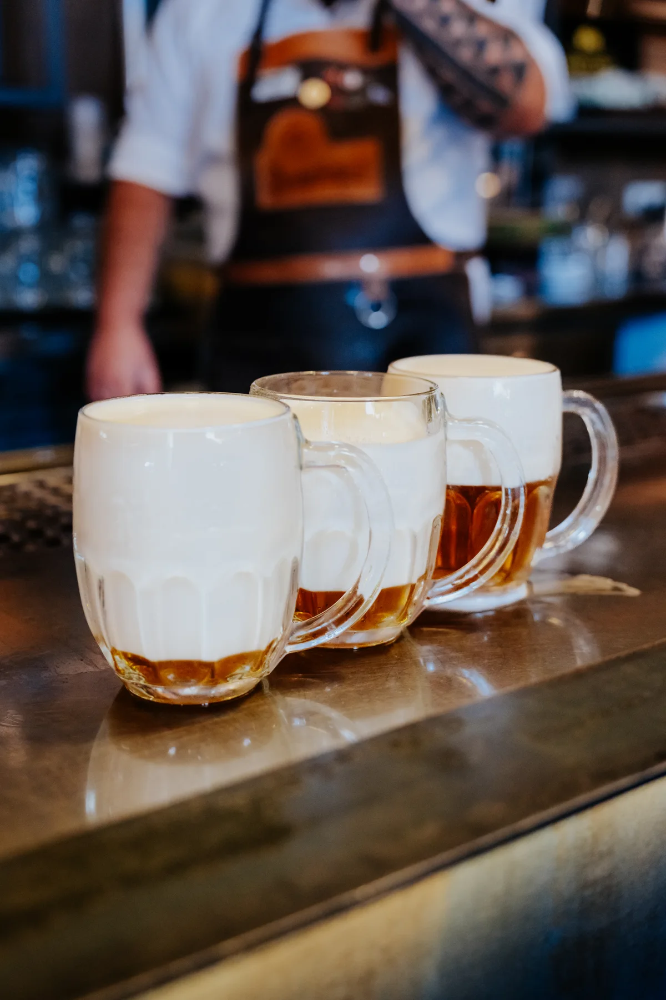
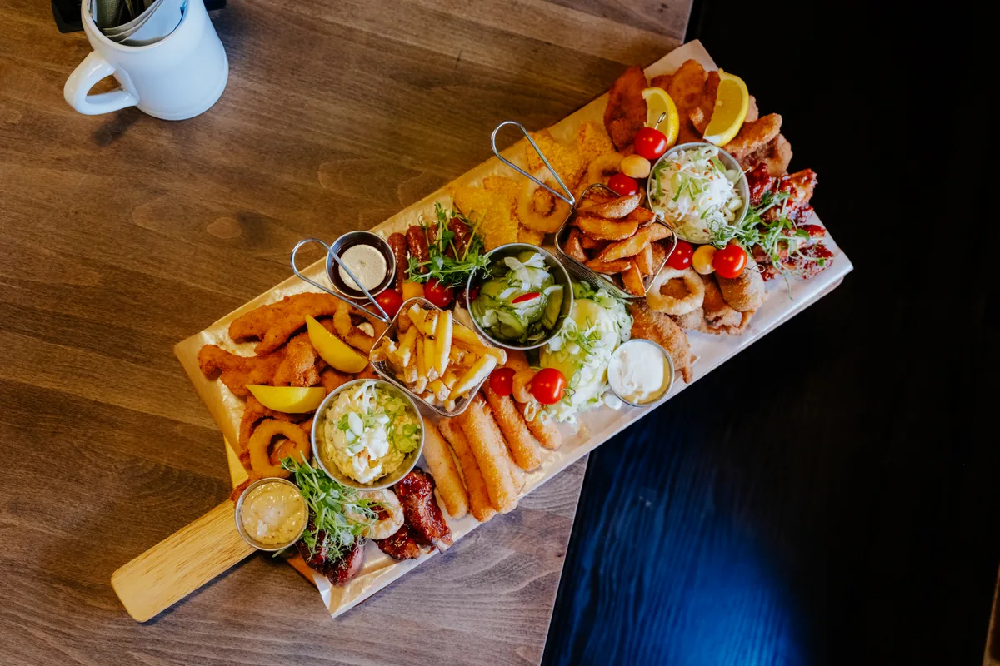

Z kuchyně
Česká klasika
Známé chutě. Poctivě a po našem.

Praha 10 · Vršovice
Po–Ne
11—23
Waldeska · Restaurace & výčep · Vršovice
Česká kuchyně bez nánosu nostalgie. Vlastní výroba, poctivé chutě a pivo, o které je postaráno tak, jak má být.
O nás
Místo, kam se vracíte
Ve Waldesce děláme známé chutě současně a většinu věcí přímo u nás.
Od pečiva, uzenin a ručně zadělávaných knedlíků až po paštiky, zavařenou zeleninu a domácí sirupy. Žádné kudrlinky. Jen dobré jídlo, správně načepované pivo a servis, který vás nechá v klidu užít si stůl.
Prohlédnout aktuální menu ↗
Z kuchyně
Dnes by to šlo
Nabídka se mění podle sezony a toho, co dává smysl právě teď. Aktuální jídla a ceny najdete vždy v online menu.

Známé chutě. Poctivě a po našem.

Co můžeme udělat sami, to také děláme.

Správně načepované. S chutí zůstat.

Akce
Firemní & soukromé
Večírek, oslava, rodinná večeře nebo setkání týmu. Napište nám termín, počet hostů a představu — postaráme se o zbytek.
„Poctivé jídlo.
Živý podnik.
Žádná póza.“
Napište nám
Máte plán?
Pošlete nám základní informace. Ozveme se, doladíme detaily a připravíme řešení, které bude sedět vám i vašim hostům.
+420 725 970 948 info@waldeska.cz
Novinky z Waldesky
Polední nabídky, sezonní menu a speciální akce přímo do e-mailu.